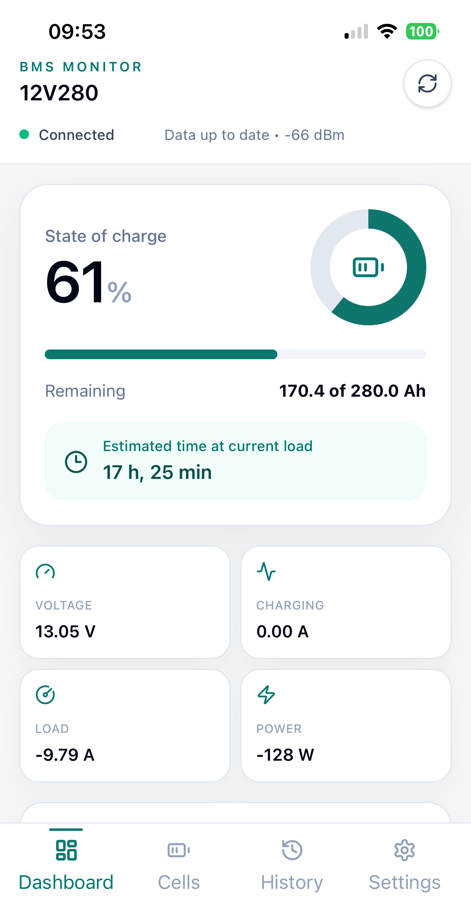
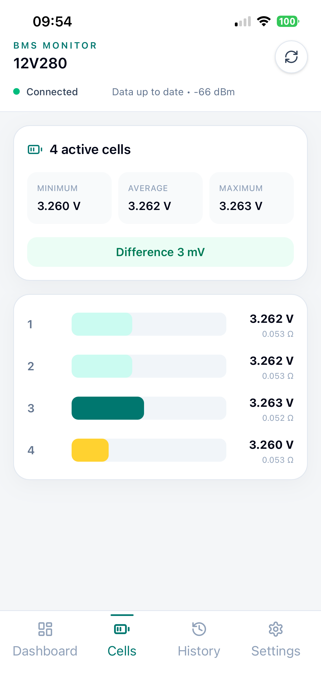
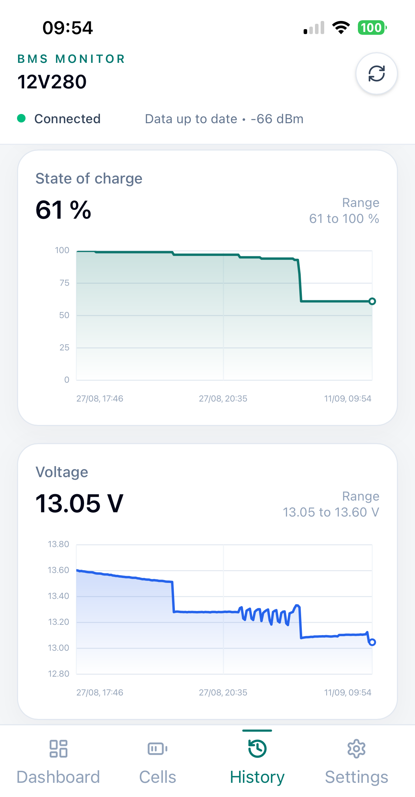
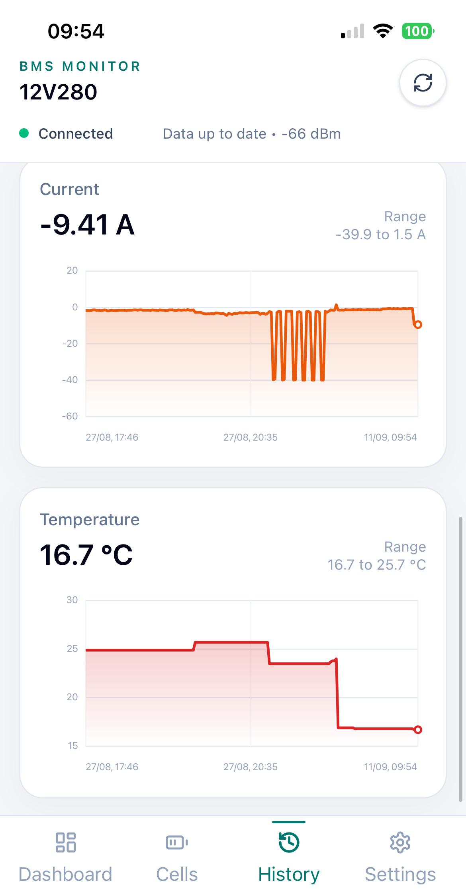
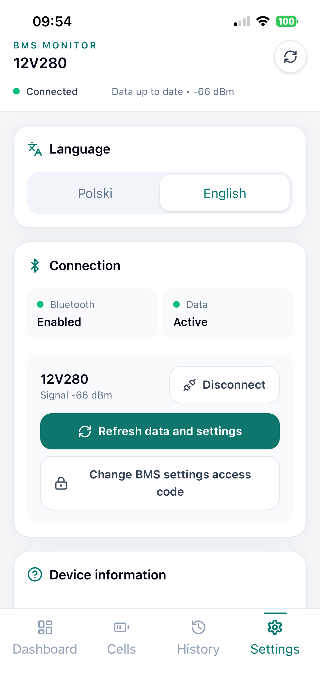
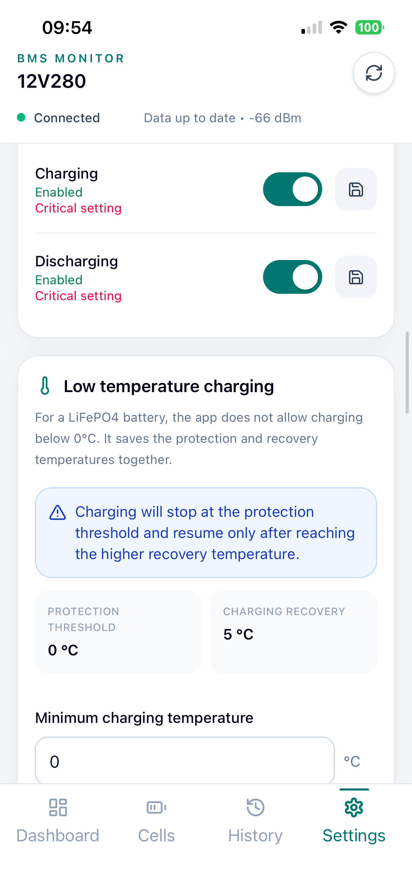

Twoja bateria LiFePO4 wreszcie pod kontrolą.
BMS Monitor łączy się bezpośrednio z JK BMS i pokazuje wszystko, co ważne: poziom naładowania, napięcia ogniw, temperatury, alarmy i historię. Bez chmury. Bez kombinowania. Po prostu otwierasz i wiesz.
Aplikacja jest dostępna w App Store. Wersja na Google Play pojawi się wkrótce.


Stworzona dla użytkowników LiFePO4 w kamperach, na łodziach i w domowych magazynach energii.
Zrobiona dla prawdziwego życia z LiFePO4
Jeśli masz akumulator z JK BMS — ta aplikacja oszczędzi Ci stresu, czasu i pieniędzy. Podejrzysz kondycję baterii zanim pojawi się problem.
Ile jeszcze godzin grzania i lodówki? Szacowany czas pracy przy aktualnym obciążeniu masz na pulpicie.
Sprawdź ładowanie, rozładowanie, balansowanie i historię napięć bez logowania do chmury.
Temperatury, alarmy, cykle i ochrona przed ładowaniem na mrozie — wszystko offline, tam gdzie nie ma zasięgu.
Diagnostyka ogniw co do miliwolta, rezystancja, kopia ustawień JSON i szybki eksport konfiguracji.
Wszystko o Twojej baterii. Czytelnie i na czas.
12 powodów, dla których użytkownicy JK BMS przechodzą na BMS Monitor.
1. Stan baterii na żywo
Poziom naładowania %, napięcie, prąd, moc, pozostałe Ah i szacowany czas pracy przy aktualnym obciążeniu.
2. Kontrola przepływu energii
Widzisz czy bateria ładuje się, rozładowuje, balansuje lub podgrzewa — bez zgadywania.
3. Temperatury
Czujniki baterii + temperatura układu MOS. Kluczowe zimą i przy dużych prądach.
4. Szczegółowe ogniwa
Napięcie i rezystancja każdego ogniwa. Min / max / średnia i różnica w mV.
5. Alarmy i kondycja
Aktywne alarmy BMS, kondycja baterii (SOH), liczba cykli i czas pracy na pulpicie.
6. Lokalna historia
Wykresy SoC, napięcia, prądu i temperatury zapisywane w telefonie. Bez konta i chmury.
7. Edycja ustawień BMS
Po kodzie 6-cyfrowym zmienisz limity napięć, prądów, temperatur, balansowanie i pojemność.
8. Włącz / wyłącz ładowanie
Sterowanie ładowaniem, rozładowaniem i balansowaniem. Każda krytyczna zmiana z potwierdzeniem.
9. Ochrona zimowa
Próg zatrzymania ładowania na mrozie + temperatura powrotu. Aplikacja sprawdza wartości przed wysyłką.
10. Weryfikacja zapisu
Po zmianie aplikacja ponownie odczytuje BMS i potwierdza, że wartość naprawdę się zapisała.
11. Kopia ustawień
Zapis lokalny, eksport do JSON i import. Przeniesiesz konfigurację w 10 sekund.
12. Tryb demonstracyjny
Poznaj aplikację bez BMS. Przykładowe dane, zablokowana edycja i zero komend Bluetooth.
Tak wygląda spokój o baterię
Prawdziwe ekrany z aplikacji. Jasne, duże liczby, zero chaosu — do obsługi w rękawiczkach na kempingu też się nada.




Połącz. Podejrzyj. Śpij spokojnie.
Bez rejestracji, bez serwera, bez wysyłania danych gdziekolwiek. Wszystko dzieje się między Twoim telefonem a BMS-em.
Włącz Bluetooth i wybierz BMS
Aplikacja znajduje Twoje JK BMS w pobliżu. Jedno tapnięcie i jesteś połączony.
Monitoruj na żywo
Pulpit, ogniwa i historia aktualizują się automatycznie z siłą sygnału w dBm.
Steruj gdy trzeba
Odblokuj edytor kodem, zmień limity i zweryfikuj zapis. Z kopią JSON bezpiecznie.
Prywatność z zasady, nie z obietnicy
Dane baterii, historia pomiarów i kopie ustawień zostają w Twoim telefonie. Kopia opuszcza urządzenie tylko gdy sam ją wyeksportujesz. Nie wymagamy konta ani serwera do obsługi BMS.
✓ Brak śledzenia ✓ Brak chmury ✓ Eksport tylko na Twoje życzenie
Bezpieczeństwo przed wygodą
Edytor chroniony 6-cyfrowym kodem, krytyczne przełączniki wymagają osobnego potwierdzenia, wartości zimowe są walidowane, a każdy zapis jest ponownie odczytywany z BMS dla pewności.
✓ Potwierdzenia ✓ Walidacja ✓ Weryfikacja zapisu
Czy zadziała z moim BMS-em?
BMS Monitor współpracuje z kompatybilnymi systemami JK BMS dla LiFePO4 obsługującymi wariant protokołu JK02. Konkretna kompatybilność zależy od modelu JK BMS, wersji firmware i implementacji protokołu.
BMS Monitor jest niezależnym narzędziem i nie jest oficjalną aplikacją JK ani JiKong. Nie wiesz czy Twój model zadziała? Napisz do nas przez formularz poniżej — podaj model BMS i wersję aplikacji, pomożemy.
Najczęstsze pytania
Masz pytanie? Pomagamy szybko.
Problem z połączeniem, pytanie o kompatybilność albo pomysł na funkcję — napisz. Odpowiadamy zazwyczaj w 24 h. Pilne? Opisz dokładnie model JK BMS i wersję systemu w telefonie.
Napisz bezpośrednio
mlynarski.mateusz@gmail.com
Odpisujemy w 24 h robocze. Dołącz screen z zakładki Ustawienia jeśli dotyczy połączenia.
Zanim napiszesz
1. Sprawdź FAQ powyżej
2. Wypróbuj tryb demo w aplikacji
3. Zanotuj model BMS + wersję iOS/Android
To przyspieszy pomoc o połowę.
🚀 Czekasz na Google Play?
Wybierz w formularzu temat „Powiadom o wersji Google Play” i zostaw e-mail. Damy znać, gdy wersja na Androida będzie dostępna.
Przestań zgadywać, co dzieje się w Twojej baterii.
Pobierz BMS Monitor i zobacz napięcia ogniw, temperatury i prawdziwy czas pracy — w 30 sekund po połączeniu przez Bluetooth.
Bez konta • Dane tylko w telefonie • Polski i English • Tryb demo bez BMS